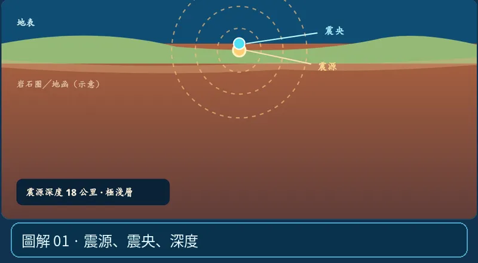

第 01 單元｜圖解 1/6｜課本 p.66–67
震源、震央、深度
震源是地下開始破裂的位置；震央是震源正上方的地表投影點；震源深度是兩者間的垂直距離。
① 看一眼② 操作圖③ 自己推理④ 揭開解答
🔬 這張圖，請自己動手試
操作圖上方的頁籤、滑桿或按鈕；圖片也能左右滑動放大觀看。
互動圖解 · 震源、震央、深度

原創 SVG 地科教學模型，方便理解，非真實比例、非即時地震資料；互動無法載入時仍有靜態圖。
STEP 01 · 先觀察
👀 眼睛先找線索
拖動「震源深度」，先找地下發光點，再找地表藍點。注意兩點是否必須在同一條垂直線？
💡 為什麼是這樣？
地下破裂釋放能量處叫震源，垂直投影到地面的位置才叫震央；海面和山谷都不影響這個定義。
🎯 換個問法想一題
新聞說震央在花蓮，是否代表岩石在花蓮地表破裂？
我想好了，點開看答案 ↓
不一定。震央只是震源在地表的投影；地下才是真正破裂處。
⚡ 一句記住：一個地震有三個位置量